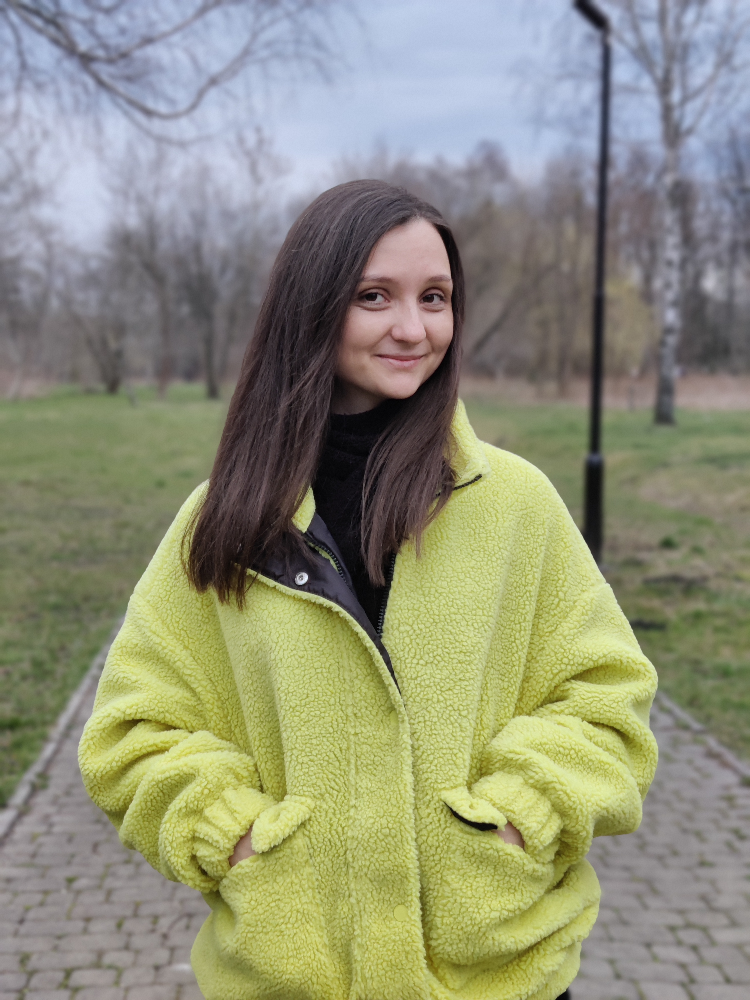

Yuliia Tsiniavska
Date of birth:
27 October 1994
Country:
Ukraine

I am searching for a junior frontend developer position where I can
put my existing skills to use, be valuable in this role, and have the
chance to advance my knowledge and abilities.
Completed courses:
-
Successfully completed course of Quality Control in IT-Cluster
Academy.
-
Successfully completed the Digital Drawing online course in ArtCraft
School.
Professional skills:
- Good knowledge of selling techniques.
- Adobe Photoshop skills.
- Basic knowledge of Adobe Illustrator.
- Basic knowledge of HTML, CSS.
- Visual Studio Code user.
- Figma user.
- Basic skills of Netlify.
-
Good computer skills: MS Office (Word, Excel, PowerPoint etc.).
- Confident PC user (Windows XP, Windows 7, Windows10).
Employment history:
Oct 2019 - present: Promoter at Bosch & Siemens TM.
Duties and responsibilities:
- Bosch & Siemens appliances selling.
-
Strong knowledge of the appliances we sell and the ability to show
and present them to the customer that would lead to product buying
as the decisive step.
-
Handle trainings dedicated to Bosch & Siemens appliances among the
shop’s sellers
-
Increasing trustiness to the brand Bosch & Siemens among the shop’s
trading branches staff.
-
To order goods from the warehouse of trading branches, goods for
internet orders and organization of goods transportation between
trading branches.
Dec 2014 – Sep 2019: Sales consultant at Groupe SEB Ukraine.
Duties and responsibilities:
- Customer consultation.
- Appliances selling of Groupe SEB.
- Appliances presentation.
-
Handle trainings for shop’s sellers dedicated to appliances of
Groupe SEB.
- Accomplish monthly sales plan.
Aug 2014 – Dec 2014: seller of non-food goods at DIESA Ltd.
Duties and responsibilities:
- Customers consultation.
- Goods selling.
- Work in 1С program.
- Placing goods on the shop shelves.
Sept 2013 – Nov 2013: bookkeeper assistance at the office of
private entrepreneur as the part of student’s practice.
Languages skills:
- English – upper intermediate level.
- Ukrainian – native.
Personal qualities:
Ability to learn fast and apply new knowledge. Character is calm. Good
troubleshooting and multi-tasking skills. Good client-facing
abilities, communicational skills, team working abilities. Open
minded, kind, responsible, creative.
Education:
2013 – 2017
Ivano-Frankivsk National Technical University of Oil and Gas.
Obtained qualification: Master’s degree
Program Subject Area: Accounting and Audit
Professional qualification: Master of Accounting and Audit
Answers to questions
- Yuliia
- 29
- Ivano-Frankivsk.
- Promoter at Bosch & Siemens TM.
- Master of Accounting and Audit.
-
Only my personal efforts on the front-end, which include several
online marathons and free courses.
-
I had heard about this academy before. That's why when I was looking
for courses, I chose this one.
- Ukraine.
-
I'm here to gain new knowledge and develop in the front-end. In
order to work in this field in the future.